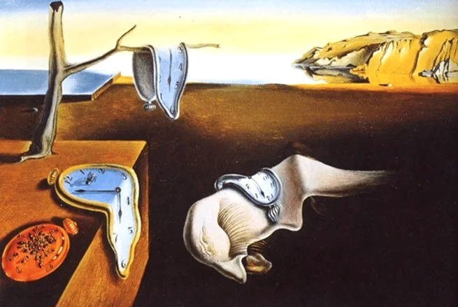
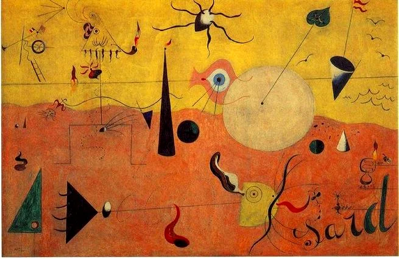
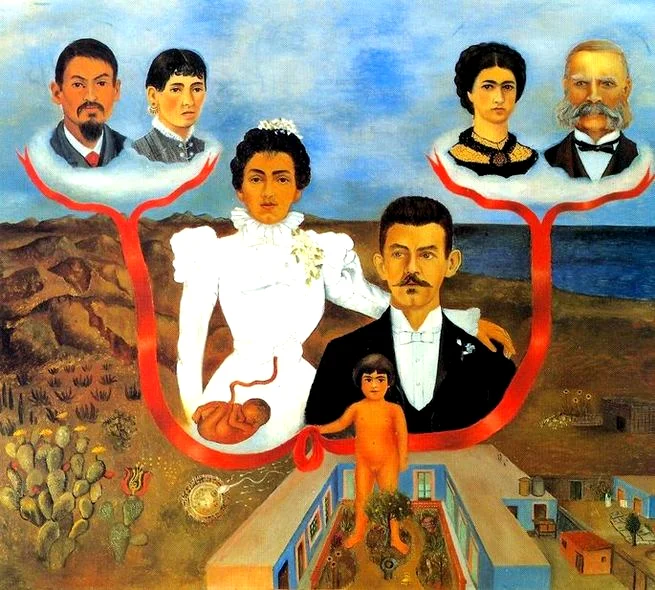
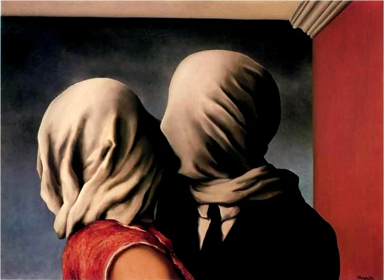
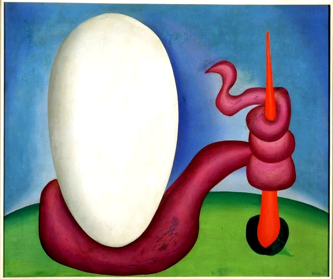
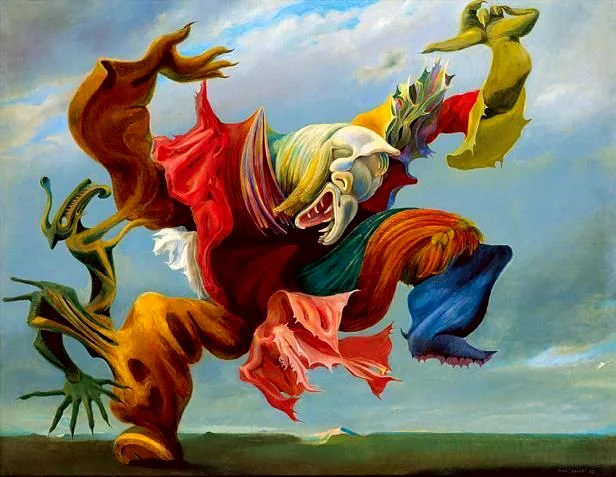
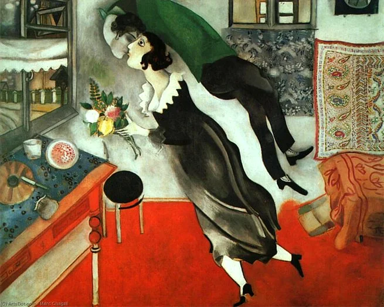
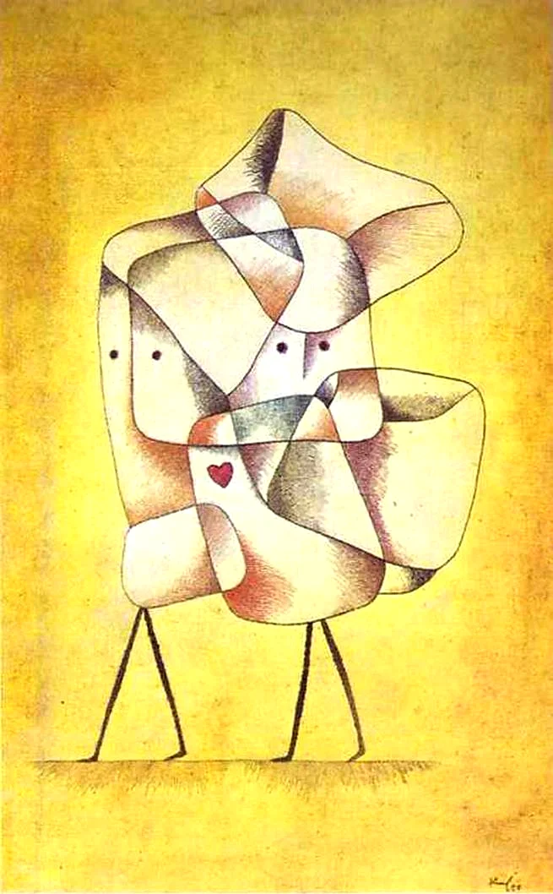
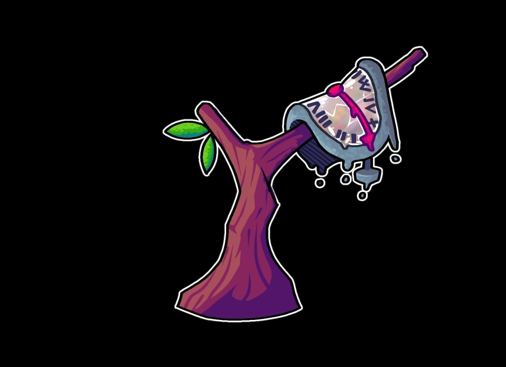

As Obras do Surrealismo
Veja abaixo algumas das maiories artes do surrealismo
- A persistência da memória, de Salvador Dali

- Paisagem catalã, o caçador, de Joan Miró

- Meu avós, meus pais e eu, de Frida Kahlo

- Os amantes, de René Magritte

- Urutu, de Tarsila do Amaral

- O triunfo do surrealismo, de Max Ernst

- Aniversário, de Marc Chagall

- Irmãos, de Paul Klee

- Temos esta releitura de uma obra de Salvador Dalí
